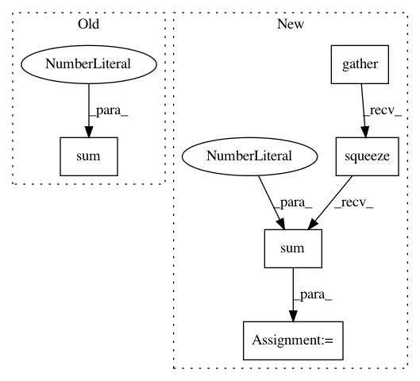

65c51a90b9034c934e4f91d6fe35d6a28c3b2f7e,model/seq2seq.py,Seq2SeqModel,score_decoding_results,#Seq2SeqModel#Any#Any#,144
Before Change
tgt_sent_log_scores = torch.gather(log_scores, 1, flattened_tgt_sents.unsqueeze(1)).squeeze(1)
tgt_sent_log_scores = tgt_sent_log_scores * (1. - torch.eq(flattened_tgt_sents, 0).float()) // 0 is pad
// (batch_size)
tgt_sent_log_scores = tgt_sent_log_scores.view(-1, batch_size).sum(dim=0)
return tgt_sent_log_scores
def score(self, src_sents_var, src_sents_len, tgt_sents_var):
After Change
tgt_sent_log_scores = -self.label_smoothing_layer(log_scores, tgt_sents_var_sos_omitted)
else:
// (tgt_sent_len, batch_size)
tgt_sent_log_scores = torch.gather(log_scores, -1, tgt_sents_var_sos_omitted.unsqueeze(-1)).squeeze(-1)
tgt_sent_log_scores = tgt_sent_log_scores * (1. - torch.eq(tgt_sents_var_sos_omitted, 0).float()) // 0 is pad
// (batch_size)
tgt_sent_log_scores = tgt_sent_log_scores.sum(dim=0)
return tgt_sent_log_scores
def step(self, x, h_tm1, src_encodings, src_encodings_att_linear, src_sent_masks=None):
In pattern: SUPERPATTERN
Frequency: 3
Non-data size: 5
Instances
Project Name: pcyin/tranX
Commit Name: 65c51a90b9034c934e4f91d6fe35d6a28c3b2f7e
Time: 2018-10-28
Author: pcyin@cs.cmu.edu
File Name: model/seq2seq.py
Class Name: Seq2SeqModel
Method Name: score_decoding_results
Project Name: ruotianluo/self-critical.pytorch
Commit Name: adae08c077d07f6da6c95d995d8211cf9e9590e4
Time: 2019-04-11
Author: rluo@ttic.edu
File Name: eval_utils.py
Class Name:
Method Name: eval_split